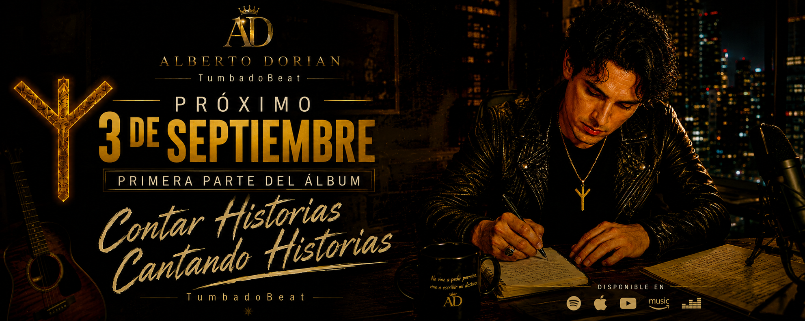

Alberto Dorian
Alberto Dorian es un artista mexicano y creador del movimiento TumbadoBeat, una propuesta que fusiona el regional mexicano, el pop, los sonidos urbanos y la música electrónica para crear una identidad única. Cada lanzamiento representa una evolución artística, con canciones que transmiten energía, pasión, superación y autenticidad.